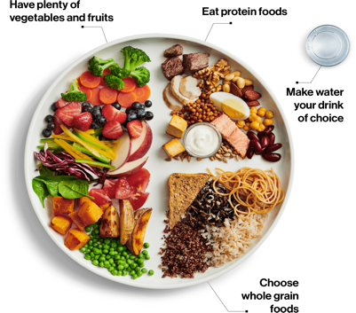

-
What is the value of nutriton and why is it important to know,
especially in the U.S.?
Please see the section, "Why Nutrition?" on this website for your
reference. More details are mentioned there.
-
Why did your team decide to showcase the information on a website
versus other platforms?
We realized that the vast amount of information found from the original
food dataset would not be suitable to view on mobile devices. Hence, we
chose to build a website to make it easy to read and understand for our
audience. This helps to improve visibility and navigation for our
audience as they interact with our website.
- Where did you get the data and when?
We retrieved the food datasets from the U.S. Department of Agriculture
research services page here
(https://fdc.nal.usda.gov/download-datasets.html). We used the most
recent dataset available, which was updated in April 2020.
-
How did you illustrate specific nutrient values for different food
intake?
After analyzing the data from USDA, we were able to find the nutritional
facts for each food item. After comparing multiple food items, we
aggregated the common nutritional fact values and update the values in
our portal.
- Who is the intended audience for this website?
This website can apply to anyone, but is most beneficial to
pediatricians and parents.
-
Do you have a visual guide of what portions of food groups to consume
daily?
Here is a sample of what a daily intake on a plate could look like
below. However, it's best to consult with your doctor before making any
changes to your diet. Please keep in mind that any nutrition information
listed on this site is for illustrative purposes only.

Image Source: Health Canada, 2019